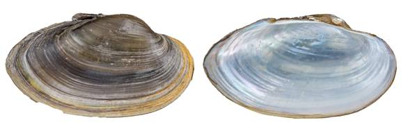

Pyganodon grandis (Say, 1829)
Giant Floater

Pyganodon grandis – Guadalupe River [Guadalupe River drainage], length 110.0 mm.
Identification
Shell structure: thin and brittle, occasionally somewhat thick in older individuals, inflated.
Shell outline: subelliptical, subovate, subrhomboid or subtriangular; may have a low dorsal wing posterior to the umbo, which can be reduced or missing due to breakage and erosion.
Posterior ridge: rounded or indistinct.
Shell color: greenish, yellowish-green, yellow, tan, brown, or black; surface subglossy to glossy.
Rays: may present faint green or brown rays.
Shell texture: without sculpture.
Umbo: low to high, broad, elevated above the hinge line; umbo cavity shallow to moderately deep.
Umbo sculpture: double-looped ridges or nodular bumps.
Pseudocardinal teeth: absent.
Lateral teeth: absent.
Interdentum: absent.
Nacre: white, occasionally with a cream, salmon or pink tint, may show brassy blotches; iridescent posteriorly.
Other: not sexually dimorphic.
General range
Mississippi River basin from Louisiana north to Minnesota, and west to eastern Colorado and Montana. Throughout the Ohio, Tennessee, and Cumberland drainages. Widespread in the Great Lakes, St. Lawrence, and Hudson Bay basins and the Canadian Interior Basin. Gulf Coastal Basins from the Rio Grande of Texas and Mexico to the Ochlockonee River, Florida.
Habitat
Streams to rivers, sloughs, oxbows, lakes, canals, ponds, stock tanks, and reservoirs. In riverine systems can be found primarily in near shore habitats along banks and in backwater pools and oxbows. Occurs in areas with little or no currents in silt and mud substrates, although sometimes found in sand, gravel and cobble
Legal listing status: